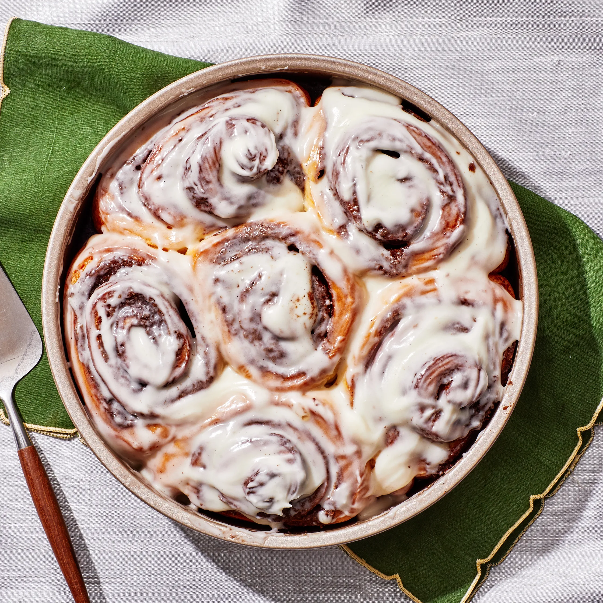

Cinnamon Rolls
Home

On first glance these homemade cinnamon rolls may not look like anything out of the ordinary.
Buttery, golden brown yeasted dough, check; delicious cinnamon–brown sugar filling, check; decadent cream cheese icing, check. But we’re putting it all on the line to wager that this recipe, thanks to a few choice tactical twists, produces the best, most ooey-gooey, perfectly fluffy from-scratch buns you’ll ever make.
Ingredients
- 4 cups all-purpose flour
- 1/2 cup granulated sugar
- 1 packet (2 1/4 tsp) active dry yeast
- 1 teaspoon salt
- 1 cup whole milk, warmed
- 1/2 cup unsalted butter, melted
- 2 large eggs
- 1 tablespoon ground cinnamon
- 1/2 cup brown sugar, packed
- 1/2 cup cream cheese, softened
- 1 cup powdered sugar
- 1 teaspoon vanilla extract
Steps
- In a large bowl, combine 2 cups of flour, sugar, yeast, and salt.
- In a separate bowl, mix the warmed milk, melted butter, and eggs. Add to the dry ingredients and mix until combined.
- Gradually add the remaining flour until a soft dough forms. Knead for about 5 minutes until smooth.
- Cover the dough and let it rise in a warm place for about 1 hour or until doubled in size.
- Roll out the dough into a rectangle, spread with softened cream cheese, and sprinkle with cinnamon and brown sugar.
- Roll up tightly and cut into 12 equal pieces. Place in a greased baking dish.
- Cover and let rise again for about 30 minutes.
- Bake at 350°F (175°C) for 25-30 minutes or until golden brown.
- For the icing, mix powdered sugar, vanilla extract, and a little milk until smooth. Drizzle over warm rolls before serving.